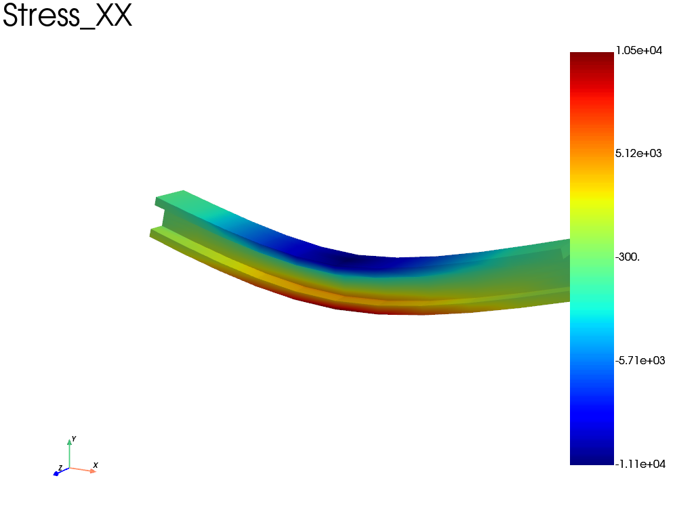

Note
Go to the end to download the full example code.
3 points bending of an I-Shape beam
import fedoo as fd
import numpy as np
Geometry and Mesh
In this example, a mesh is created with an I-shaped cross-section. First, an I-shape profil is built using linear triangle elements ‘tri3’. The ‘extrude’ function is then used to create the 3d geometry based on wedge elements ‘wed6’.
# Build a I shaped beam profil
profil = fd.mesh.structured_mesh.I_shape_mesh(10, 10, 2, 2, 1, "tri3")
mesh = fd.mesh.extrude(
profil,
100, # extrusion length,
11,
) # n_nodes
mesh.nodes = mesh.nodes[
:, [2, 1, 0]
] # switch axis to put the extrusion direction along the X axis
# Uncomment the following line to use quadratic elements
# mesh = fd.mesh.functions.change_elm_type(mesh, 'wed15') #or 'wed18'
print(f"element type: '{mesh.elm_type}'")
element type: 'wed6'
Problem définition
Define a 3d linear static problem with a linear elastc constitutive law
fd.ModelingSpace("3D")
# Material definition
material = fd.constitutivelaw.ElasticIsotrop(200e3, 0.3)
wf = fd.weakform.StressEquilibrium(material)
# Assembly
assembly = fd.Assembly.create(wf, mesh)
# Type of problem
pb = fd.problem.Linear(assembly)
Boundary conditions
Create set of nodes to apply boundary conditions (ie numpy array of node indices) and apply boundary conditions on the sets:
Ux = Uy = 0 on the left bottom edge
Uy = 0 on the right bottom edge
Uy = -10 on the edge at the center top
bottom = mesh.find_nodes("Y", mesh.bounding_box.ymin)
top = mesh.find_nodes("Y", mesh.bounding_box.ymax)
left_bottom = np.intersect1d(mesh.find_nodes("X", mesh.bounding_box.xmin), bottom)
right_bottom = np.intersect1d(mesh.find_nodes("X", mesh.bounding_box.xmax), bottom)
center_top = np.intersect1d(mesh.find_nodes("X", mesh.bounding_box.center[0]), top)
pb.bc.add("Dirichlet", left_bottom, "Disp", 0)
pb.bc.add("Dirichlet", right_bottom, "DispY", 0)
pb.bc.add("Dirichlet", center_top, "DispY", -10)
Dirichlet boundary condition:
var = 'DispY'
n_nodes = 8
value = -10
Solve and plot results
Solve and extract, stress and displacement field and plot sigma_{xx}
pb.solve()
res = pb.get_results(assembly, ["Stress", "Disp"])
res.plot("Stress", "XX", "Node", show_edges=False)

Total running time of the script: (0 minutes 1.083 seconds)